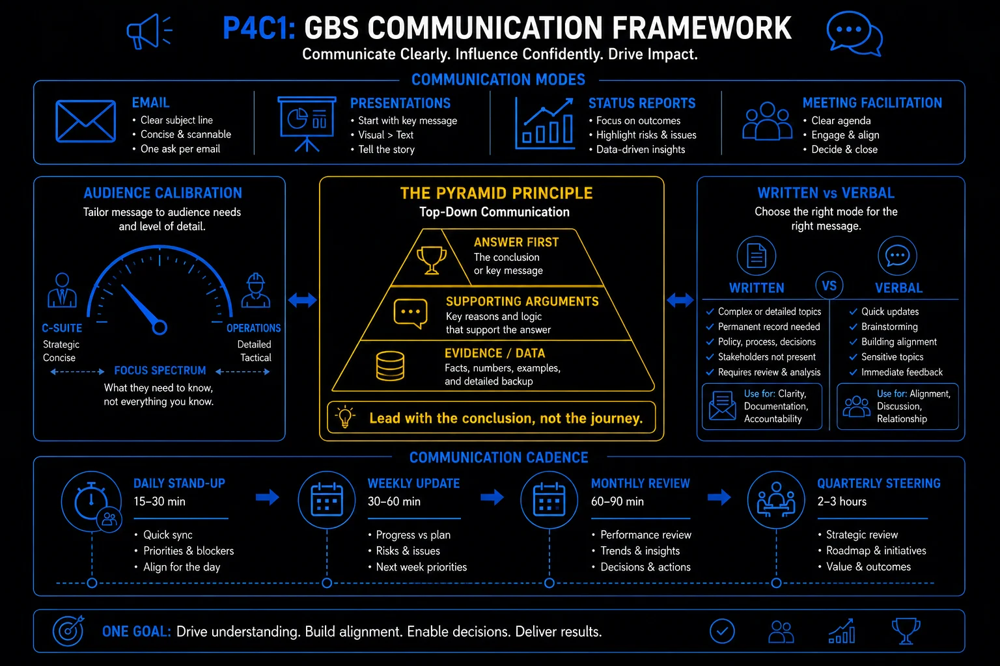

Pillar 4 · Cluster 1
Communication skills that drive GBS credibility
GBS operates across time zones, languages, and cultural contexts. The professionals who advance are the ones who communicate clearly, adapt to their audience, and know when to escalate versus when to solve quietly.
Topic 01 · Cultural Intelligence
High-context vs low-context communication
A direct email that works in Amsterdam can destroy a relationship in Tokyo. Understanding cultural communication styles is operational, not optional.
Edward Hall's framework splits cultures into two communication styles, and GBS teams have to work across both.
- High-context cultures (Japan, India, Arab countries): meaning is embedded in relationships, hierarchy, and unspoken cues.
- Low-context cultures (Germany, Netherlands, USA): communication is explicit, direct, and expects written confirmation.
- GBS teams working across both must adapt their style depending on the audience, not default to their own preference.
Communication norms
- Direct and explicit — say exactly what you mean
- Written confirmation expected for decisions
- Disagreement expressed openly in meetings
- Deadlines are hard commitments
Communication norms
- Indirect and layered — read between the lines
- Verbal agreements carry weight; written follow-up may feel distrustful
- Disagreement expressed privately, after the meeting
- Deadlines are targets; relationship and context can adjust timelines
- The most dangerous assumption in GBS communication is that silence means agreement. In high-context cultures, silence can mean disagreement, discomfort, or deference to hierarchy.
- When in doubt, confirm in writing — but frame it as "summarizing for clarity" not "documenting what you said." The framing matters.
- Build relationships before you need them. In high-context cultures, the relationship determines whether your message gets heard at all.
Written vs verbal — choosing the right channel

GBS communication framework: lead with the conclusion, not the journey
Topic 02 · Virtual Communication
Virtual presence — being seen and heard remotely
In a GBS center, your reputation is built on video calls and written messages. Virtual presence is built on reliability, clarity, and follow-through.
- Camera on as default — visibility builds trust; exceptions should be the exception, not the rule
- Structured updates — lead with the conclusion, then provide supporting detail (Minto Pyramid principle)
- Active participation — contribute, ask questions, and summarize; silent participants are invisible participants
- Follow-up discipline — action items documented and sent within 24 hours, every time, no exceptions
- Professional environment — background, lighting, and audio quality signal how seriously you take the interaction
In GBS, the people who get promoted are often the people who are visible, not necessarily the people who do the best work. Virtual presence is how you make your contributions visible without being performative.
- Summarize decisions.
- Volunteer for presentations.
- Send structured updates that make your work tangible to stakeholders who never see your daily output.
Topic 03 · Executive Communication
Writing executive summaries and briefings
Senior leaders read the first paragraph and the recommendation. Everything else is supporting evidence they may or may not review. Structure accordingly.
Lead with the recommendation
State what you want the reader to do or decide in the first sentence. Do not build up to it. Senior leaders skim — if the answer is buried in paragraph three, they will never find it.
Provide the "so what"
Explain why this matters — the business impact, the risk of inaction, or the opportunity cost. Connect your recommendation to something the executive cares about (revenue, risk, headcount, timeline).
Support with data, not opinion
Use specific numbers, comparisons, and trends. "Processing time increased 23% quarter-over-quarter" is actionable. "Processing is getting slower" is not.
Anticipate objections
Address the two or three most likely pushback points before they are raised. Show you considered alternatives and explain why your recommendation is the strongest option.
Close with clear next steps
Who does what by when. If you need a decision, state the decision needed, the options, and the deadline. Do not leave the reader wondering what happens next.
- Burying the lead — putting context and background before the recommendation
- Data without interpretation — presenting numbers without explaining what they mean for the business
- Too much detail — executive summaries that are neither executive nor summaries
- Passive voice — "it is recommended that" instead of "I recommend" or "the team recommends"
- No ask — ending without a clear request for decision, approval, or action
The Pyramid Principle — lead with the answer
Topic 04 · Distributed Operations
Working across time zones and asynchronous collaboration
When your team spans Manila, Krakow, and Detroit, synchronous communication is a luxury. Mastering async work is a core GBS skill.
- Document decisions, not just discussions — if it was decided in a call, it needs a written record accessible to those who were not present
- Overlap windows are scarce — use them for decision-making and problem-solving, not status updates that could be written
- Default to written — video calls should have a purpose that cannot be achieved in writing
- Time zone awareness — never schedule recurring meetings that are consistently inconvenient for the same time zone; rotate the pain
- Handoff protocols — when work passes between time zones, the handoff must include status, blockers, and next actions in writing
- The best GBS teams treat async communication as the default and synchronous meetings as the exception. Most status updates, approvals, and updates do not need a meeting.
- A 30-minute meeting with 8 people across 3 time zones costs 4 hours of productive time. A well-written Slack message or email costs 15 minutes.
Communication cadence — rhythm across time zones
The most common communication failure in GBS — and the most fixable — is assuming everyone thinks and reacts the same way you do. Cultural awareness combined with empathy is the fix, and it's a learnable skill, not something you're born with. A simple habit that pays for itself immediately: brief yourself before meetings. Who is this person? What's their cultural background? What communication style are they likely to expect? Adapt your style to them. Don't wait for them to adapt to yours. And when you're new to any stakeholder relationship, asking questions instead of talking is the smartest opening move you can make.
Reference
Glossary
Full glossary at the GBS Insider Club Field Guide.
- Edward T. Hall — Beyond Culture (1976), the foundational framework for high/low-context communication
- Barbara Minto — The Pyramid Principle (1987), standard reference for structured executive communication
- McKinsey — Communication effectiveness in distributed organizations, 2024
- Harvard Business Review — Managing Across Time Zones, 2024
- SSON Analytics — GBS workforce distribution survey, 2025
Knowing the frameworks is the entry ticket. Applying them — visibly, at your actual job — is what gets you promoted.
The GBS Insider Club Career Paths turn this theory into a guided 90-day program for your role: self-assessment, practical exercises, templates, and Julian's unfiltered practitioner playbook.
Explore the Career Paths → Back to Stakeholder Communication